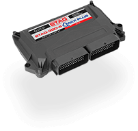
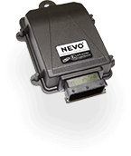
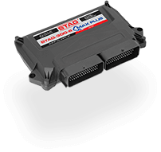
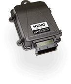

Ремонт электронных блоков управления ГБО 4-го поколения
Более 10 лет на рынке газобаллонного оборудования
НАШИ ПРОДУКТЫО компании
Наша компания существует на рынке газобаллонного оборудования более 10 лет. За это время наработан большой опыт в диагностике и ремонте газовых электронных блоков управления (ЭБУ) 4-го поколения, таких как: Stag300, Stag4, Stag200, Zen it, GoFast, KME, Diego G3, KME Nevo, Tamona, Agis, Sec и др. Производим ремонт данной электроники любой сложности и в короткие сроки. Проверка ЭБУ производится на стенде и не требует присутствия автомобиля. Наиболее частые неисправности ЭБУ, такие как: обрыв цепи газовых форсунок, пропадание бензиновых впрысков, открытие газового клапана при выключенной газовой установке, чаще всего связаны с замыканиями электропроводки ГБО. Это только некоторые примеры неисправностей. Их количество и разнообразие очень велико. Бывают случаи, в которых восстановить ЭБУ не представляется возможным. Как правило, это случаи, когда повреждена плата между слоями. Причиной такой неисправности, чаще всего, является замыкание проводки и установленный предохранитель большего наминала, чем положено.
 



Наши услуги
-
Ремонт электроники и датчиков
Настройка и ремонт электроники и различных датчиков ГБО
-

Замена ремкомлектов редукторов
Ремонтные услуги по замене ремкомлектов редукторов
-
Установка готовых комплектов ГБО
Услуги по установке комплектов ГБО различных производителей
-
Специфические ремонтные работы
Ремонт ДВС, ходовой, услуги шиномонтажа и т.д.
Контакты
-
СТО-Дарница:
г.Киев, ул. Тепловозная 18Д
(068) 518-43-03, (066) 601-43-69, (093) 296-98-96
Алексей
-
СТО-Троещина:
г. Киев, ул. Пуховская 2
(093) 490-59-59, (095) 490-59-59, (097) 490-59-59
Андрей
-
Прием новой почты:
г. Киев, склад №125
(067) 605-16-66
получатель: Лопата Василий Григорьевич